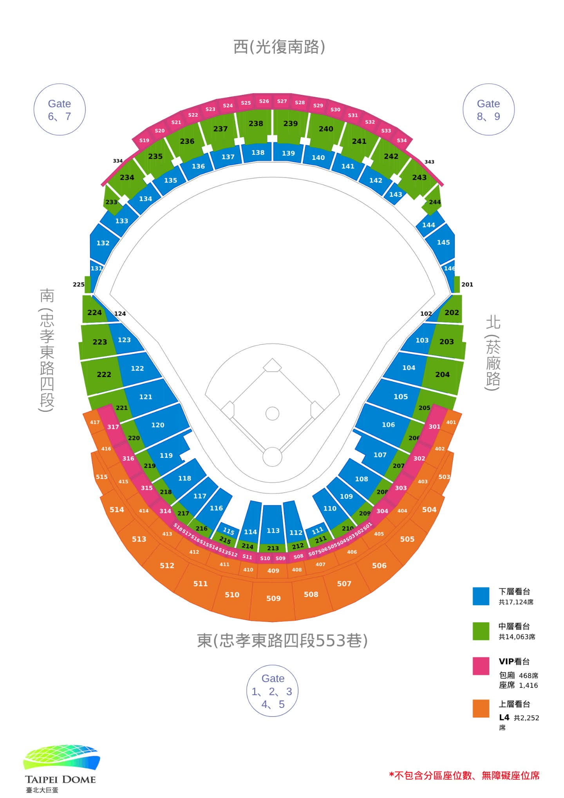

1ST WORLD TOUR
NMIXX
EPISODE 1 : ZERO FRONTIER
In Kaohsiung


演唱會現場應援活動依日期遞延，請留意各主辦方的最新公告。
聯應團隊已釋出公告，此次演唱會應援團隊規劃的 Dress Code：7/13 DAY1 — 藍色 💙、7/12 DAY2 — 白色 🤍。
記得多備電池！手燈 APP 是 NMIXX Light Stick，不確定現場會不會用到，但建議先下載備用。
出門前請再三確認票已帶好！
詳細內容可以看這篇 → Threads 貼文 ↗
線上買票：請直接至味全龍官方售票網進行線上購票。
過安檢：進場時需配合包包安全檢查，建議大家多抓一點提前到達的時間，避免因排隊耽誤入場。
1. 棒球賽事期間，請跟著味全龍應援團長的節奏與帶領，一起為場上奮戰的球員們大聲吶喊！
2. 手燈絕對禁用：雖然可以攜帶手燈進場，但在比賽過程中嚴禁開啟！
3. 任何細小的光線都極有可能干擾球員視線、影響比賽安全，請務必配合。
等到賽後表演、NMIXX 正式登台時，就可以立刻拿出手燈點亮，盡情為女孩們大聲喊出應援口號，給予最大的支持！
如果你也有舉辦應援活動，歡迎提交讓更多人知道！